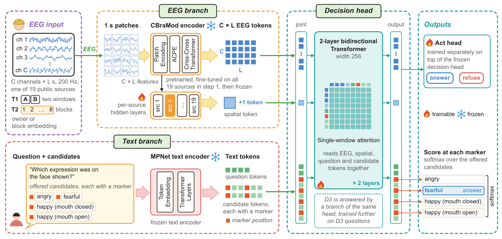

Read the EEG
A CBraMod encoder supplies EEG features. The model can combine them across two windows or across blocks of a longer window.
A System One decision model and benchmark for multi-task EEG question answering
Ask different questions about the same EEG. EEGJev uses the question and offered answers to decide what to read from the signal. EEGJev-Bench measures how well that decision follows the question and when a model should decline.
Scored tasks by question type
The benchmark
EEGJev-Bench spans 19 public EEG sources, with 17 contributing to test scores. Its six question types cover attributes, comparisons, event timing, and decisions about when to decline.

The model
EEGJev scores all offered answers in a single pass through the decision head. Each choice receives a score that the application can use directly.

A CBraMod encoder supplies EEG features. The model can combine them across two windows or across blocks of a longer window.
Frozen MPNet encodes the question and candidate labels for the shared decision head.
The decision head scores candidates. A separate head estimates whether the offered set contains a valid answer for refusal questions.
Evaluation
Test participants are held out from v1.3 training. Scores weight the contributing sources equally.
Each pairwise comparison uses the tasks that both models cover. The score depends on the question type.
Paired questions hold the EEG and options fixed. Refusal tests pair answerable cases with cases that omit the correct option.
Resources